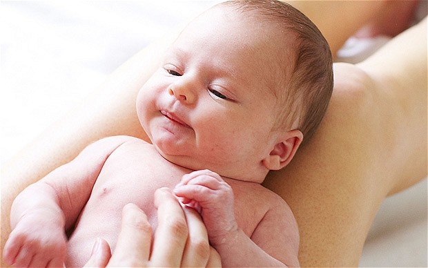

Killing babies no different from abortion, experts say
Author: Stephen Adams
Published Feb 29, 2012
The article, which argued newborns and foetuses were only "potential persons" and not "actual persons", has provoked a storm of protest.
Dr Minerva, a research associate at Oxford while being based at the University of Melbourne, said the recent days had been "the worst in my life" after the article attracted widespread attention.
"This is not a proposal for law," she told an Australian news website. "This is pure academic discussion.
"I wish I could explain to people it is not a policy and I'm not suggesting that and I'm not encouraging that."
The authors, whose piece was published in the Journal of Medical Ethics, suggested that "what we call after-birth abortion (killing a newborn) should be permissible in all the cases where abortion is, including cases where the newborn is not disabled".
Many believe such possibilities should never be raised - even within the confines of an ethics journal.
However, some anti-abortionists have welcomed its publication, saying it casts a bright light on what abortion actually is.
Anthony Ozimic, from the Society for the Protection of Unborn Children (SPUC), said the article, which he described as a "chilling promotion of infanticide", showed how abortion was "creating a culture of death".
While he was appalled at the suggestion that newborns should be killed for their parents' convenience, he nevertheless said it showed the logical framework behind infanticide and abortion was the same.
He said: "The paper proves what pro-lifers have long been arguing: that the common arguments for abortion also justify infanticide.
"There is no difference in moral status between a child one day before birth and a child one day after birth.
"Birth is merely a change of location, not a change from non-personhood to personhood."
He continued: "All human beings, regardless of age, location or capacities, are regarded in international law as equal members of the human family and thus as having an equal right to life."
The authors, ethicists Dr Alberto Giubilini and Dr Francesca Minerva, argued: "The moral status of an infant is equivalent to that of a foetus in the sense that both lack those properties that justify the attribution of a right to life to an individual.”
Rather than being “actual persons”, newborns were “potential persons”. They explained: “Both a foetus and a newborn certainly are human beings and potential persons, but neither is a ‘person’ in the sense of ‘subject of a moral right to life’.
“We take ‘person’ to mean an individual who is capable of attributing to her own existence some (at least) basic value such that being deprived of this existence represents a loss to her.”
-As such they argued it was “not possible to damage a newborn by preventing her from developing the potentiality to become a person in the morally relevant sense”.
"Actual persons" could be harmed by being killed, in that they were prevented from accomplishing "aims".
But they argued: "Now, hardly can a newborn be said to have aims as the future we imagine for it is merely a projection of our own minds."
Parents should be able to have the baby killed if it turned out to be disabled without their knowing before birth, they said, citing the example that only 64 per cent of Down’s syndrome cases in Europe were diagnosed by prenatal testing.
Once such children were born there was “no choice for the parents but to keep the child”, they wrote.
“To bring up such children might be an unbearable burden on the family and on society as a whole, when the state economically provides for their care.”
However, they did not argue that some baby killings were more justifiable than others – their fundamental point was that, morally, there was no difference to abortion as already practised.
They preferred to use the phrase “after-birth abortion” rather than “infanticide” to “emphasise that the moral status of the individual killed is comparable with that of a fetus”.
Both Minerva and Giubilini know Prof Savulescu through Oxford. Minerva was a research associate at the Oxford Uehiro Centre for Practical Ethics until last June, when she moved to the Centre for Applied Philosophy and Public Ethics at Melbourne University.
Giubilini, a former visiting student at Cambridge University, gave a talk in January at the Oxford Martin School – where Prof Savulescu is also a director – titled 'What is the problem with euthanasia?'
He too has gone on to Melbourne, although to the city’s Monash University. Prof Savulescu worked at both univerisities before moving to Oxford in 2002.
Defending the decision to publish in a British Medical Journal blog, Prof Savulescu said that arguments in favour of killing newborns were “largely not new”.
What Minerva and Giubilini did was apply these arguments “in consideration of maternal and family interests”.
The authors argued: "The alleged right of individuals (such as foetuses and newborns) to develop their potentiality ... is over-ridden by the interests of actual people (parents, family, society) to pursue their own well-being because, as we have just argued, merely potential people cannot be harmed by not being brought into existence."
"Actual people's well-being could be threatened by the new (even if healthy) child requiring energy, money and care which the family might happen to be in short supply of.
"Sometimes this situation can be prevented through abortion, but in some cases this is not possible. In these cases, since non-persons have no moral rights to life, there are no reasons for banning after-birth abortions."
While accepting that many people would disagree with their arguments, Prof Savulescu commented: “The goal of the Journal of Medical Ethics is not to present the Truth or promote some one moral view. It is to present well reasoned argument based on widely accepted premises.”
Speaking to The Daily Telegraph, he added: “This “debate” has been an example of “witch ethics” - a group of people know who the witch is and seek to burn her. It is one of the most dangerous human tendencies we have. It leads to lynching and genocide.
"Rather than argue and engage, there is a drive is to silence and, in the extreme, kill, based on their own moral certainty. That is not the sort of society we should live in.”
He said the journal would consider publishing an article positing that, if there was no moral difference between abortion and killing newborns, then abortion too should be illegal.
Dr Trevor Stammers, director of medical ethics at St Mary's University College, said: "If a mother does smother her child with a blanket, we say 'it's doesn't matter, she can get another one,' is that what we want to happen?
"What these young colleagues are spelling out is what we would be the inevitable end point of a road that ethical philosophers in the States and Australia have all been treading for a long time and there is certainly nothing new."
Referring to the term "after-birth abortion", Dr Stammers added: "This is just verbal manipulation that is not philosophy. I might refer to abortion henceforth as antenatal infanticide."